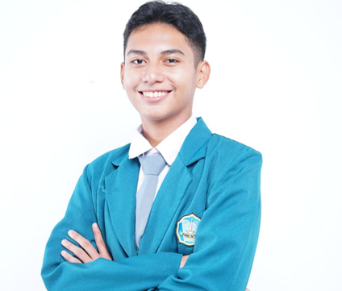

RADAFFA AMARUL SUKMA
daffasukma70@gmail.com |
+62 895-6170-20307 |
DKI Jakarta - Jakarta Pusat

PROFIL
Mahasiswa Sistem Informasi Telkom University Jakarta yang aktif
dalam organisasi dan berbagai kegiatan. Memiliki kemampuan
komunikasi yang baik, percaya diri, ramah, serta mampu beradaptasi
dan bekerja sama dalam tim. Memiliki ketertarikan besar pada
industri dan event musik, khususnya dalam peran usher, serta
antusias untuk berkontribusi dalam menciptakan pengalaman yang
nyaman dan positif bagi para pengunjung.
PENGALAMAN ORGANISASI & PRESTASI
Ketua OSIS SMKN 14 Jakarta (2023 - 2024)
-
Memimpin dan mengelola lebih dari 10 program kerja OSIS
selama masa kepengurusan
-
Mengkoordinasikan dan membangun kerja sama yang solid
dengan 36 anggota OSIS
-
Menginisiasi dan menyelenggarakan konser sekolah pertama,
sebagai bagian dari program kerja OSIS
Anggota Divisi Kreatif Forum OSIS DKI Jakarta (2023 - 2024)
-
Membuat konten dan desain untuk kampanye edukasi di
social media untuk para pelajar seluruh Indonesia,
khususnya DKI Jakarta
Juara Harapan Festival Teater Pelajar (2024)
-
Berperan sebagai aktor dalam pementasan teater
berjudul ADOLECENTS
-
Berkontribusi dalam persiapan latihan dan pertunjukan
hingga meraih Juara Harapan
Anggota Marketing Crew Telkom University Jakarta
Januari 2026 - Sekarang
-
Bertugas dalam Divisi Story Telyu pada FGD Digital Team
-
Membantu pembuatan dan pengelolaan konten digital untuk
mendukung promosi dan publikasi kegiatan
PENGALAMAN MAGANG
BADAN PENGAWAS OBAT DAN MAKANAN (BPOM)
Januari - Maret 2025
Bekerja di bagian tata usaha, bertugas membuat desain poster,
reels, dan konten untuk Instagram resmi BPOM.
KOMISI YUDISIAL (KY)
April - Juni 2025
Bekerja di Biro Pusat Analisis dan Layanan Informasi.
Membantu membuat konten dan dokumentasi acara, serta
mendukung kegiatan administratif.
SOFT SKILL
- Talkactive
- Communication
- Teamwork
- Time Management
- Adaptability
- Responsibility & Discipline
- Event Handling
- Coordination with Team & Committee